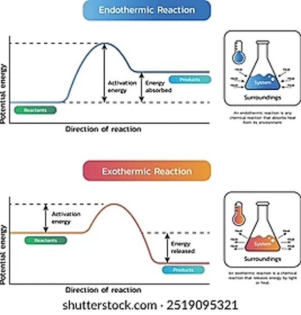

QUÍMICA II
Unidad 3: Cinética Química
Clase 10: Velocidad de Reacción
Unidad 3: Cinética Química
Clase 10: Velocidad de Reacción
La velocidad de reacción expresa cómo cambia la concentración de reactivos o productos en función del tiempo.
Para una reacción general: $aA + bB \rightarrow cC + dD$
La velocidad se puede expresar como:
$$ \text{Velocidad} = -\frac{1}{a}\frac{\Delta[A]}{\Delta t} = -\frac{1}{b}\frac{\Delta[B]}{\Delta t} = \frac{1}{c}\frac{\Delta[C]}{\Delta t} = \frac{1}{d}\frac{\Delta[D]}{\Delta t} $$Se calcula como el cambio de concentración de un reactivo en un intervalo de tiempo:
Ejemplo: Para la reacción $Br_2(ac) + HCOOH(ac) \rightarrow 2Br^-(ac) + 2H^+(ac) + CO_2(g)$, la velocidad promedio se calcula a partir de la disminución de $[Br_2]$.
| Tiempo (s) | [Br₂] (M) | Velocidad promedio (M/s) |
|---|---|---|
| 0 | 0.0120 | — |
| 50 | 0.0101 | 3.80 × 10⁻⁵ |
| 100 | 0.00846 | 3.28 × 10⁻⁵ |
| 150 | 0.00710 | 2.72 × 10⁻⁵ |
| 200 | 0.00596 | 2.28 × 10⁻⁵ |
Es la velocidad en un instante específico. Se obtiene trazando la tangente a la curva de concentración vs tiempo en ese punto. La pendiente de la tangente da la velocidad instantánea.

Figura 1: Determinación de la velocidad instantánea mediante la pendiente de la tangente.
La ley de velocidad relaciona la velocidad de reacción con las concentraciones de los reactivos elevadas a ciertas potencias, determinadas experimentalmente.
Los valores de $x$, $y$ y $k$ se determinan experimentalmente y no necesariamente coinciden con los coeficientes estequiométricos.
Para la reacción $A + 2B \rightarrow C$ a 25°C, se obtuvieron los siguientes datos:
| Experimento | [A]₀ (M) | [B]₀ (M) | Velocidad inicial (M/s) |
|---|---|---|---|
| 1 | 0.10 | 0.10 | 5.50 × 10⁻⁶ |
| 2 | 0.20 | 0.10 | 2.20 × 10⁻⁵ |
| 3 | 0.40 | 0.10 | 8.80 × 10⁻⁵ |
| 4 | 0.10 | 0.30 | 1.65 × 10⁻⁵ |
| 5 | 0.10 | 0.60 | 3.30 × 10⁻⁵ |
Se asume: $V = k[A]^x[B]^y$.
Usando experimentos 1 y 2 (donde [B] es constante):
$$ \frac{V_2}{V_1} = \frac{k(0.20)^x(0.10)^y}{k(0.10)^x(0.10)^y} = \frac{2.20 \times 10^{-5}}{5.50 \times 10^{-6}} = 4 \Rightarrow 2^x = 4 \Rightarrow x = 2 $$Usando experimentos 4 y 5 (donde [A] es constante):
$$ \frac{V_5}{V_4} = \frac{k(0.10)^x(0.60)^y}{k(0.10)^x(0.30)^y} = \frac{3.30 \times 10^{-5}}{1.65 \times 10^{-5}} = 2 \Rightarrow 2^y = 2 \Rightarrow y = 1 $$Por lo tanto, la ley de velocidad es: $V = k[A]^2[B]$.
Despejando $k$ del experimento 1:
$$ k = \frac{5.50 \times 10^{-6}}{(0.10)^2(0.10)} = 5.50 \times 10^{-3} \, \text{M}^{-2}\text{s}^{-1} $$Teoría de las colisiones: Las moléculas deben chocar para reaccionar. Cuanto más frecuentes y energéticas sean las colisiones, mayor será la velocidad.
La energía de activación ($E_a$) es la energía mínima que deben poseer las moléculas en colisión para que la reacción ocurra.
Svante Arrhenius propuso que solo una fracción de las colisiones conduce a la reacción; aquellas con energía cinética total igual o mayor a $E_a$.
La ecuación de Arrhenius relaciona la constante de velocidad con la temperatura:
$$ k = A e^{-E_a / RT} $$ donde $A$ es el factor de frecuencia y $R$ es la constante de los gases.
Figura 2: Diagrama de energía para una reacción exotérmica. La energía de activación es la barrera que debe superarse.
La conversión de metil isonitrilo a acetonitrilo es exotérmica. La velocidad depende de la magnitud de $E_a$; a menor $E_a$, más rápida es la reacción.
Para una reacción de primer orden: $A \rightarrow \text{productos}$, la ley de velocidad es:
$$ \text{Velocidad} = -\frac{d[A]}{dt} = k[A] $$Integrando, se obtiene:
$$ \ln\frac{[A]}{[A]_0} = -kt \quad \text{o} \quad \ln[A] = -kt + \ln[A]_0 $$La vida media ($t_{1/2}$) es el tiempo necesario para que la concentración se reduzca a la mitad de su valor inicial:
Para una reacción de primer orden, la vida media es independiente de la concentración inicial.
La constante de velocidad para la descomposición del $N_2O_5$ es $k = 6.2 \times 10^{-4} \, \text{s}^{-1}$ a 45°C. Si se tienen 80 g de $N_2O_5$ en $CCl_4$:
a) ¿Cuánto tiempo tardará en disminuir a 2.5 g?
b) ¿Cuántos litros de $O_2$ se producen a 745 mmHg y 45°C?
a) Usando la ecuación integrada:
$$ \ln\frac{2.5}{80} = -6.2 \times 10^{-4} \cdot t $$ $$ \ln(0.03125) = -3.4657 = -6.2 \times 10^{-4} t \Rightarrow t = 5589.9 \, \text{s} $$b) Moles de $N_2O_5$ descompuestos = $77.5\,g / 108\,g/mol = 0.7176\,mol$
Estequiometría: $2N_2O_5 \rightarrow 2N_2O_4 + O_2$
Moles de $O_2$ = $0.7176 / 2 = 0.3588\,mol$
Usando $PV = nRT$: $V = \frac{0.3588 \times 62.36 \times 318}{745} = 9.5 \, \text{L}$
Haz clic en cada nodo para desplegar u ocultar sus ramas.
Haz clic en la tarjeta para voltearla.
Ingresa las concentraciones inicial y final de un reactivo y el intervalo de tiempo.
Ingresa datos de dos experimentos donde se varía la concentración de un reactivo manteniendo constante la del otro.
La mayoría de los fármacos siguen una cinética de primer orden en su eliminación. La vida media ($t_{1/2}$) es un parámetro clave para determinar la frecuencia de dosificación.
Ejemplo: La penicilina tiene una vida media de aproximadamente 30 minutos, por lo que debe administrarse varias veces al día.
Las enzimas actúan como catalizadores biológicos, disminuyendo la energía de activación de las reacciones metabólicas. La cinética de Michaelis-Menten describe la velocidad de las reacciones enzimáticas.
La velocidad de oxidación de vitaminas (como la vitamina C) en los alimentos sigue una cinética de primer orden, lo que permite predecir su vida útil y diseñar envases protectores.
"NCTP"
N = Naturaleza de reactantes
C = Concentración / Presión
T = Temperatura
P = Presencia de catalizadores (y también Presión)
"K = A e^(-Ea/RT)"
Recuerda: "Katy A Ella le gusta el helado de Ea sobre RT"
"t₁/₂ = 0.693 / k"
"Sesenta y nueve tres sobre k"
La velocidad promedio se calcula sobre un intervalo de tiempo, mientras que la instantánea es en un punto específico (pendiente de la tangente).
El orden debe determinarse experimentalmente; no se puede deducir de la ecuación balanceada.
La concentración de reactivos disminuye, por lo que Δ[Reactivo] es negativo. Para que la velocidad sea positiva, se coloca un signo menos.